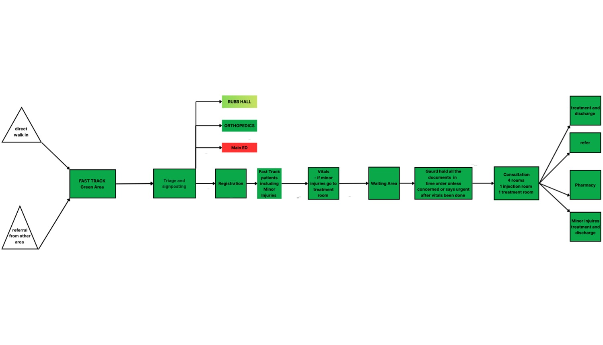
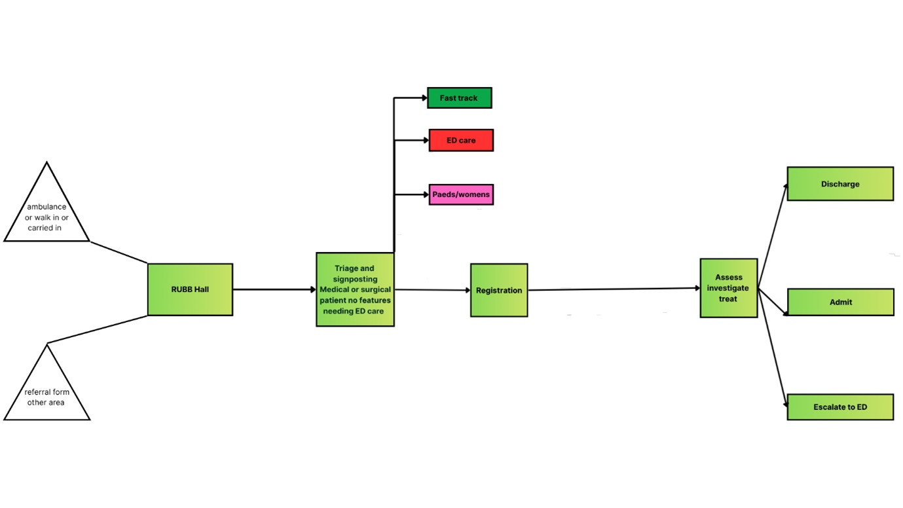
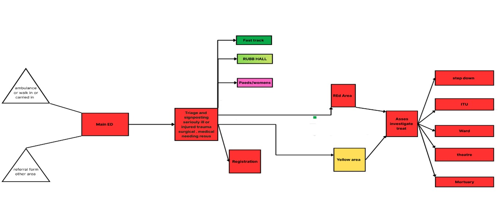
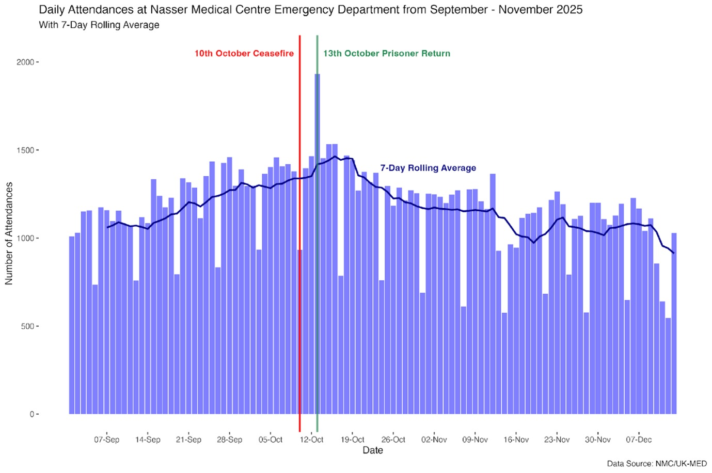

Patient flow
Normal flow in each are ais demonstrated by these flow diagrams .

Nasser Medical Complex is a tertiary hospital in southern Gaza. Its central location in Khan Younis makes it the primary referral centre for MCIs and major trauma. NMC is one of the few facilities with critical imaging capabilities for trauma patients, solidifying its vital role in the health conflict response. The ED is a high-acuity 54-bed unit (subject to change soon), comprising:
Normal flow in each are ais demonstrated by these flow diagrams .



Patient attendances
